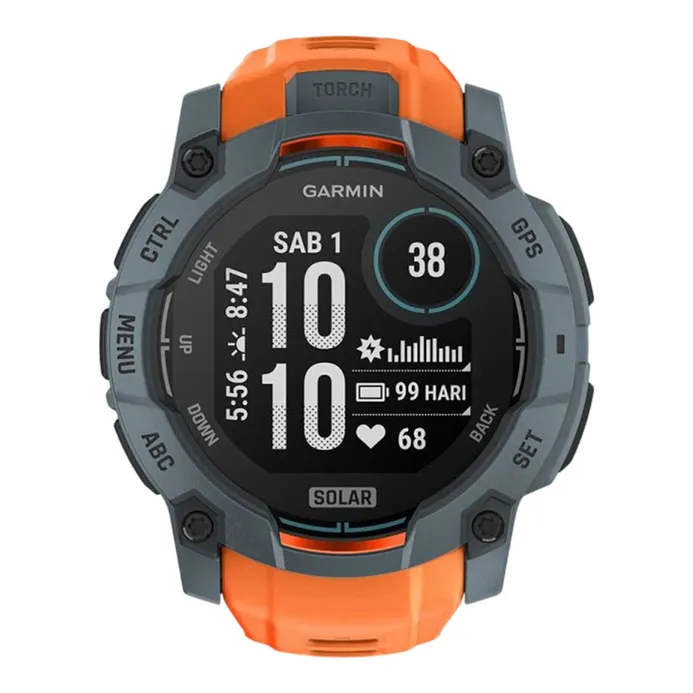

Rp 8.899.000
Garmin Instinct 3 Tactical Edition menghadirkan performa luar-ruang yang sangat tangguh dengan bezel
logam, pengisian tenaga surya tak terbatas, dan fitur navigasi serta health-tracking mutakhir. Dirancang
untuk pria yang mengejar petualangan, tugas luar ruangan, atau gaya hidup aktif yang ekstrem.
Fitur-fitur utama: GPS multi-band dengan SatIQ™, built-in flashlight LED, mode taktis (night vision,
stealth), case 45 mm, tahan air 10 ATM, serta berbagai metrik kesehatan — semua dibalut desain premium
dan tahan banting. :contentReference[oaicite:2]{index=2}
| Model No. | 010-02934-90 |
|---|---|
| Case Size (L×W×H) | 45 × 45 × 14.9 mm |
| Weight | 52 g |
| Case & Bezel Material | Fiber-reinforced Polymer / Metal-reinforced Bezel |
| Band Material | Silicone Band / Resin Band |
| Glass | Power Glass / Chemically Strengthened Glass |
| Water Resistance | 100 m / 10 ATM |
| Battery Life | Up to 28 days in Smartwatch mode / Unlimited with Solar* |
| GPS & Navigation | Multi-Band GPS with SatIQ™ Technology |
| Health & Wellness | Wrist HR, Pulse Ox, Sleep Score & Coaching, HRV Status, Daily Suggested Workouts |
| Additional Features | Built-in Flashlight LED, Tactical Modes (Jumpmaster, Dual Grid Coordinates, Stealth Mode), Garmin Pay™, Connect IQ Support |